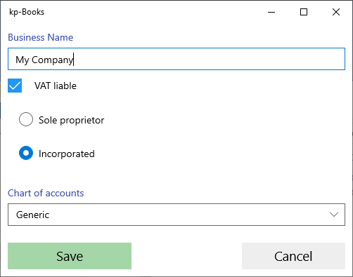

First of all, the application asks you to choose between Greek or English. The selection can be changed later from the menu "Settings" - "change language".
It then requests an email account to be licensed. In windows you have to type it, while in android you choose it from the accounts we have set on our mobile. The email account must be the one we stated at the time of purchase of the application.
Once the license is activated, the following image will appear:

If you are going to run the application on multiple devices and want the data to be synchronized, then each device must be uniquely identified by a letter. For example, the mobile phone could have the letter 'A' and the desktop computer the letter 'B'. The device ID can be changed from the "Settings" - "Data Sync" - "This device" menu (see Data Sync)
The application will now create your business and will display the following screen to fill in its name, if it is subject to VAT and if it is a sole proprietorship or a corporation.
From the menu "Settings" - "Company Details" you can change the above details and fill in additional details. If you already have customers, suppliers, and warehouse items, you can bulk import with Import data from excel file